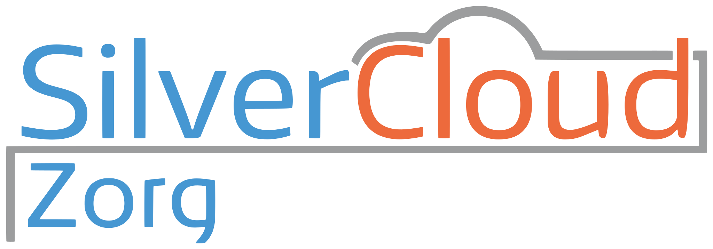

Technologie die werkt voor de zorg
Het begint bij een netwerk waarop de zorg kan vertrouwen. SilverCloud voert regie over uw digitale infrastructuur en bouwt daarop verder met een servicedesk en zorgtechnologie die werken op de werkvloer.

Niet méér netwerkbeheer. U houdt de regie, wij regelen het beheer.
Uw netwerkinfrastructuur is geen kostenpost, maar de digitale ruggengraat van uw zorgorganisatie. U houdt de regie, wij nemen het beheer uit handen: architectuur, beveiliging, beschikbaarheid en lifecycle.
Architectuur
Eén integraal netwerkdesign als fundament.
U de regie, wij het beheer
U houdt de touwtjes in handen, wij zorgen dat het netwerk werkt.
Transparantie
Open calculatie op netwerkhardware en verbindingen. Gedeelde monitoring is mogelijk.
Continu verbeteren
Eén gezamenlijke roadmap.
We spreken de taal van de zorg
Techniek is ons vak, de zorg is onze context. Ons team combineert ICT-expertise met jarenlange ervaring in en met zorgorganisaties: van interim hoofd ICT en programmamanager in de zorg tot collega’s die zelf in de ouderenzorg hebben gewerkt.
Cultuur
Hoge werkdruk, onregelmatige diensten en een sterk verantwoordelijkheidsgevoel. We weten dat een storing tijdens de dienstwisseling iets anders betekent dan op een kantoor.
Uitdagingen
Personeelstekort, administratielast, NEN 7510 en AVG, de Wzd, agressie op de werkvloer en de vraag hoe je digitaliseert zonder de zorg te belasten.
Oplossingen
Domotica, zorgalarmering, leefcirkels, lokalisatie, medische apparatuur en IoT. We weten wat ze van het netwerk vragen en hoe ze samenwerken.
Applicaties
ECD’s, Zenya, AFAS, TOPdesk, Ultimo en domotica-koppelingen. We kennen de systemen waarmee uw medewerkers dagelijks werken.
Communicatie
Begrijpelijke taal, geen jargon, korte lijnen en duidelijke afspraken. We passen ons aan het ritme van zorgteams aan, niet andersom.
Van digitale basis tot ondersteuning op de werkvloer
Netwerkregie is het fundament. Daarop bouwen CareDesk en Zorgtechnologie, met dezelfde regie, dezelfde aanpak en dezelfde kennis van de zorg.
Een netwerk waarop de zorg kan vertrouwen
Architectuur, security by design, 24/7 monitoring en lifecyclemanagement, met open calculatie op hardware en verbindingen. Uw eigen ICT-afdeling kan meekijken in dezelfde dashboards, zoals PRTG, FortiAnalyzer en FortiManager.
Meer over NetwerkregieEen servicedesk die de taal van de zorg spreekt
Meer dan een helpdesk: één aanspreekpunt, kennis van ECD’s, Zenya en AFAS, en regie richting al uw leveranciers.
Meer over CareDeskZorgtechnologie die werkt op de werkvloer
Met de platforms van Evresys en Blyott, geleverd en geïntegreerd door SilverCloud. Van advies tot beheer.
Meer over ZorgtechnologieWat ons anders maakt
We zijn niet alleen uitvoerder, maar ook partner. Niet alleen beheerder, maar ook regisseur. Dat ziet u terug in hoe we werken en afrekenen.
Architectuur boven producten
We beginnen bij één integraal ontwerp en kiezen pas daarna de techniek. Elke wijziging en investering wordt daaraan getoetst.
Open calculatie
Netwerkhardware en internetverbindingen tegen inzichtelijke inkoopprijzen met een vooraf afgesproken, vast opslagpercentage.
Gedeelde monitoring
Desgewenst kijkt uw eigen ICT-afdeling mee in dezelfde dashboards, meldingen en rapportages, zoals PRTG, FortiAnalyzer en FortiManager.
Kennis van de zorg
We weten wat uitval betekent voor zorgalarmering, domotica en het ECD. We gaan pas weg als de zorg weer operationeel is.
Volledige integrator
Van netwerk tot wearable en koppeling: wij leveren, integreren en beheren. Waar wenselijk zitten fabrikant (zoals HPE of Evresys), integrator en u samen aan tafel.
Eén team met uw ICT
Heldere rollen, gedeelde kennis en een gezamenlijke meerjarenroadmap.
Eén doorlopende lijn
Implementatie en adoptie zijn onderdeel van elke oplossing, geen los project.
Luisteren
Zorgproces of bedrijfsvoering, techniek, risico’s en bestaande investeringen begrijpen.
Ontwerpen
Bepalen wat blijft en wat verandert, vastgelegd in één architectuur.
Implementeren
Projectmatig, met duidelijke verantwoordelijkheden en minimale verstoring.
Adoptie
Gebruikers, beheerders en processen meenemen in de verandering.
Beheren
Prestaties bewaken en leveranciers op elkaar laten aansluiten.
Verbeteren
Roadmap, rapportages en nieuwe mogelijkheden periodiek evalueren.


NEN 7510, ISO 27001 en ISO 9001
Wij werken aantoonbaar zorgvuldig: onze kwaliteit en informatiebeveiliging zijn onafhankelijk gecertificeerd. Voor de zorg betekent NEN 7510 dat we voldoen aan de norm voor informatiebeveiliging in de zorg.
Waar staat uw organisatie nu?
Plan een oriënterend gesprek over uw netwerk, servicedesk of zorgtechnologie.